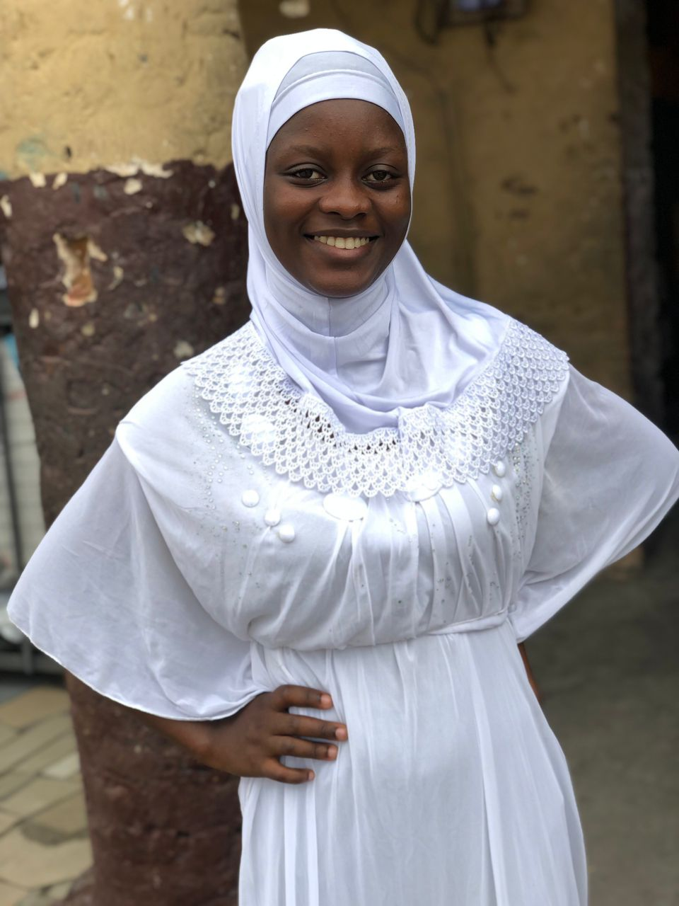

Project
Here are some project I have worked on



Email: nharnahaishakaylla@gmail.com
Phone: (+233) 548-781-601
Location: Dansoman, Greater Accra
Motivated Public Health Nurse with knowledge in community health, disease prevention, health promotion and Frontend developing with knowledge in HTML,CSS,web developing.
Public Health Nurses' School, Korle-Bu, Greater Accra
Graduated: December 2023
Tech4Girls Cohort 5 (In Progress)
Divine Grace Clinic and Maternity, Kaneshie, Greater Accra
July 2025- Present
Mamprobi Hospital, Mamprobi, Greater Accra
June 2024- July 2025
Here are some project I have worked on